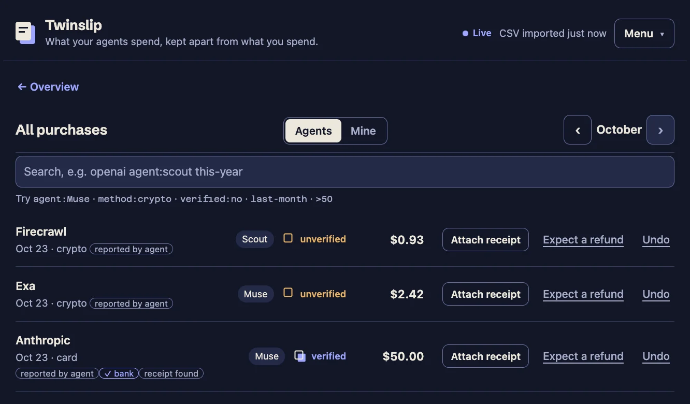

Capture automatically
Agents report each purchase as they make it: subscriptions, API credits and pay-per-use calls, with receipts from x402 and other payment rails kept as evidence. Card, prepaid credits or crypto. Nobody types anything in.
